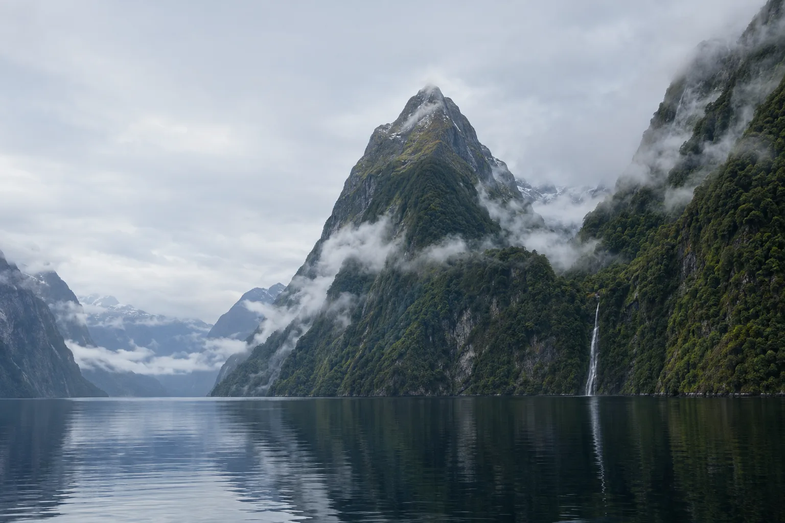
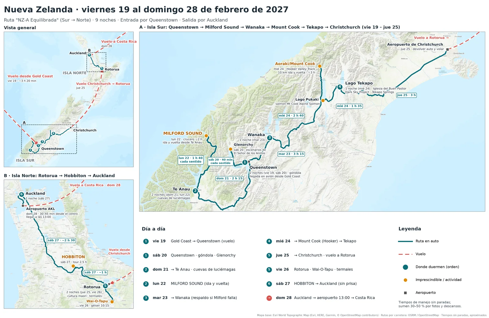
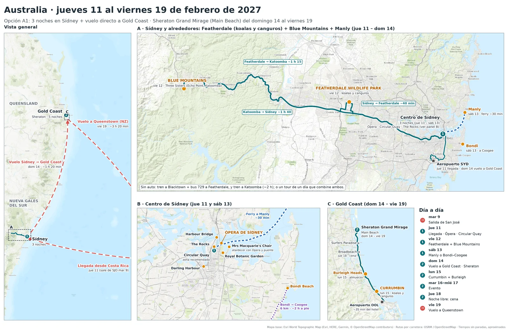

Mar 9martes
Salida de San José
Vuelo SJO → SYD con una o dos escalas (Houston, Los Ángeles, San Francisco o Dallas). Son de 24 a 30 h y, por la línea de cambio de fecha, se llega el jueves por la mañana.

Itinerario final · San José → Sídney … Auckland → San José
Martes 9 al domingo 28 de febrero de 2027
En Australia, tres noches en Sídney y vuelo directo a Gold Coast para el evento. En Nueva Zelanda, la ruta Sur → Norte: entran por Queenstown, recorren Milford Sound, Mount Cook y Tekapo, vuelan de Christchurch a Rotorua y terminan con Hobbiton y una noche en Auckland antes del vuelo del domingo 28.
Con pasaporte costarricense se necesita visa para Australia y para Nueva Zelanda. Es lo primero que hay que tramitar.
| Tema | Qué aplica | Acción |
|---|---|---|
| Visa de Australia | Con pasaporte costarricense no aplica la ETA (lista de pasaportes elegibles). Se necesita la Visitor visa 600, desde AUD 250 por persona (Home Affairs). | Solicitarla ya |
| Visa de Nueva Zelanda | Costa Rica no está en la lista de exención (Immigration NZ). Se necesita Visitor Visa, desde NZD 441; el 80 % se resuelve en 2 semanas (Immigration NZ). | Con 6–8 semanas de margen |
| Tránsito por EE. UU. | Si conectan en Houston, Los Ángeles o San Francisco, necesitan visa de EE. UU. vigente (Travel.State.Gov). | Revisar vigencia |
| Manejar en NZ | La licencia extranjera es válida si va con traducción aprobada o Permiso Internacional (NZ Police, NZTA). | Sacar el Permiso Internacional |
| Equipaje en Jetstar | Desde el 2 de febrero de 2027 el equipaje de mano se mide por tamaño (Jetstar). | Revisar al comprar OOL → ZQN |
| Tramo | Fecha | Detalle |
|---|---|---|
| SJO → SYDSan José (Alajuela), Costa Rica → Sídney (Mascot), Australia | Sale mar 9 → llega jue 11 | 1–2 escalas, de 24 a 30 h. Tarifas desde unos USD 805 solo ida (Skyscanner). Conviene un boleto multidestino con el regreso desde AKL. |
| SYD → OOLSídney (Mascot) → Gold Coast (Coolangatta), Queensland | Dom 14, media mañana | ~1 h 20 min, con 17 a 24 vuelos diarios (KAYAK). |
| OOL → ZQNGold Coast (Coolangatta), Australia → Queenstown (Frankton), Nueva Zelanda | Vie 19 | Jetstar, diario, 13:35 → 19:55 de referencia (momondo); ~3 h 20 min de vuelo (Skyscanner). |
| CHC → ROTChristchurch, Nueva Zelanda → Rotorua, Nueva Zelanda | Jue 25, media tarde | Vuelo directo de Air New Zealand (Air NZ). |
| AKL → SJOAuckland (Māngere), Nueva Zelanda → San José (Alajuela), Costa Rica | Dom 28 (en el aeropuerto a las 13:00) | Por ejemplo, Air NZ a Houston y United a SJO (Air NZ – EE. UU.). Llegan el mismo domingo o el lunes, según la conexión. |
Toquen un día para ver su ruta. Las líneas continuas son en auto y las punteadas son vuelos o ferry. Debajo de cada mapa interactivo está la versión para imprimir.
Leyenda
Toquen cualquier símbolo o línea para ver el detalle.

Leyenda
Toquen cualquier símbolo o línea para ver el detalle.

9 – 19 de febrero
Tres noches en Sídney, vuelo directo a Gold Coast y cinco noches en el Sheraton Grand Mirage, en Main Beach.
Vuelo SJO → SYD con una o dos escalas (Houston, Los Ángeles, San Francisco o Dallas). Son de 24 a 30 h y, por la línea de cambio de fecha, se llega el jueves por la mañana.
Traslado del aeropuerto al hotel (16 km, unos 20–30 min en taxi o tren). Por la tarde, caminata suave: Circular Quay, la Ópera por fuera, el Royal Botanic Garden y Mrs Macquarie's Chair al atardecer (la Ópera y el puente en una sola foto). Cierren en The Rocks.
Featherdale Wildlife Park por la mañana (AUD 49): koalas y canguros. Luego las Blue Mountains: Echo Point y las Three Sisters en Katoomba (Visit NSW). Sin auto: tren y bus 729 a Featherdale, y tren a Katoomba (~2 h); o un tour de un día que combine ambos.
Ferry a Manly: unos 30 min y AUD 11,20 por trayecto (Manly Sydney, tarifas de ferry). O la caminata costera Bondi → Coogee (6 km, ~2 h). Opcional: tour guiado de la Ópera en español, AUD 50 con reserva previa (Sydney Opera House).
Currumbin Wildlife Sanctuary (desde AUD 50): una segunda oportunidad de ver koalas y canguros. Almuerzo en Burleigh Heads. Regreso antes de las 17:00: la noche está ocupada.
Días completos del evento.
Cena en Broadbeach o Surfers Paradise. Hagan las maletas y el check-in en línea del vuelo a Nueva Zelanda.
Check-out y salida al aeropuerto OOL unas 3 h antes del vuelo.
19 – 28 de febrero
Tiempos de manejo sin paradas, calculados sobre la ruta real (OSRM / OpenStreetMap). Sumen un 30–50 % para fotos y descansos.
Jetstar OOL → ZQN, diario; horario de referencia 13:35 → 19:55 (momondo). Recogen el auto en el aeropuerto. Cena tardía en Fergburger.
Skyline Gondola (NZD 69). Por la tarde, la carretera a Glenorchy y Paradise, escenarios de El Señor de los Anillos. Opcional: Shotover Jet (NZD 199).
Parada opcional en Arrowtown antes de salir. Por la noche, Te Anau Glowworm Caves (NZD 154).
Crucero de 2 h (NZD 179–199; Air NZ actividades). Paradas en Mirror Lakes y el valle Eglinton. En el túnel Homer, de un solo carril, es normal esperar 20–30 min (RealNZ). Llenen el tanque en Te Anau.
Día de respaldo: si el lunes cerraron la carretera a Milford, intenten hoy temprano. Si no: That Wanaka Tree, el lago y la caminata corta a Mt Iron.
Hooker Valley Track: 10 km ida y vuelta, ~3 h, con el puente colgante nuevo (gratis). Salmón en Mt Cook Alpine Salmon. Por la noche, Tekapo Springs (NZD 42) o Dark Sky Summit (NZD 219).
Iglesia del Buen Pastor al amanecer. Devuelven el auto en el aeropuerto CHC y vuelan a Rotorua con Air NZ (Air NZ); allí recogen otro auto. Cena hāngī con cultura maorí: Te Puia – Te Pō (NZD 203) o Te Pā Tū (NZD 280).
Wai-O-Tapu (NZD 42; géiser Lady Knox a las 10:15). Por la tarde, Te Puia – Te Rā o las secuoyas de Redwoods. Por la noche, Polynesian Spa (desde NZD 32,95).
Salida de Rotorua hacia las 8:30. Hobbiton Signature Tour (NZD 130, 2,5 h) a media mañana, sin prisa. Almuerzo en The Shire's Rest. Opcional de camino: Hamilton Gardens (NZD 27,50 los jardines cerrados). Cena en Viaduct Harbour o Wynyard Quarter.
Mañana tranquila: el Auckland Museum (abre a las 9:00 los fines de semana y tiene una de las mejores colecciones maoríes del país) o la cumbre de Maungawhau / Mt Eden. Devuelven el auto hacia las 12:15 y están en el aeropuerto a las 13:00.
Presupuesto de USD 150–250 por noche, que equivale a unos AUD 215–360 o NZD 265–440.
Circular Quay / The Rocks
La Ópera, el puente y los ferries a pie; ideal para el primer día con jet lag.
AUD 215–360. Más barato: CBD/Wynyard o Haymarket.
Centro
Góndola, restaurantes y lago a pie.
NZD 265–440. Más barato: Frankton, cerca del aeropuerto.
Frente al lago
La base más cercana a Milford, con la última gasolinera de la ruta (RealNZ).
Moteles y lodges.
Centro / lago
Tranquilo y bien ubicado hacia Mt Cook.
Más barato: Albert Town.
Pueblo junto al lago
Iglesia, Tekapo Springs y Dark Sky a pie. Tiene unos 500 habitantes (NZ Tourism): reserven aquí primero.
Alternativa: Twizel.
Centro (Eat Streat)
Restaurantes (Eat Streat) y Polynesian Spa a pie. Los espectáculos maoríes recogen en los hoteles del centro.
Fenton Street (moteles).
CBD / Viaduct o Parnell
Cena frente al puerto el sábado. Parnell queda junto al museo y cerca de la autopista al aeropuerto.
No hace falta dormir junto al aeropuerto: el vuelo no es temprano.
Precios en moneda local. Al 19 de octubre de 2026: 1 USD ≈ 1,43 AUD y ≈ 1,76 NZD. * = estimado.
| Tipo | Australia (AUD) | Nueva Zelanda (NZD) |
|---|---|---|
| Comida económica | Pies, fish & chips, comida asiática en Haymarket: AUD 15–30 por persona* | Fergburger: NZD 17–25. Pies: NZD 8–12* |
| Comida media | The Rocks, Darling Harbour, Burleigh: AUD 40–80 por persona* | Eat Streat (Rotorua), centro de Queenstown y Wanaka: NZD 40–70 por persona* |
| Especial | Cena con vista al puerto o de San Valentín: AUD 100–180 por persona* | Cena hāngī con espectáculo: NZD 203–280. Salmón en Pukaki: NZD 20–40* |
| Imprescindibles | Ópera por fuera (gratis) · Featherdale AUD 49 · Currumbin desde AUD 50 | Hobbiton NZD 130 · Crucero en Milford NZD 179–199 · Tekapo (gratis) |
| Extras | Tour de la Ópera AUD 50 · Ferry a Manly AUD 11,20 | Cuevas de luciérnagas NZD 154 · Dark Sky NZD 219 · Tekapo Springs NZD 42 · Wai-O-Tapu NZD 42 · Polynesian Spa desde NZD 33 |
~23 °C de media
Pleno verano (WorldWeatherOnline). Febrero de 2026 tuvo lluvias cercanas al promedio (BOM). Protector solar y sombrero.
28,7° / 21,8 °C
Es el mes más lluvioso, con tormentas cortas por la tarde (Virgin Australia). Hagan Currumbin el lunes por la mañana.
22° / 9 °C
Vístanse por capas (timeanddate); en NZ dicen que hay "cuatro estaciones en un día" (NZ Tourism).
~19 °C, muy lluvioso
Con lluvia también es espectacular por las cascadas (whereandwhen). El martes 23 funciona como día de respaldo.
Oscurece después de las 21:30
Las sesiones de estrellas son tarde por la noche. Lleven abrigo para Hooker Valley.
Temporada alta
Año Nuevo Lunar el 6 de febrero y Festival de las Linternas el 20 (Farmers' Almanac). Reserven Tekapo, Te Anau y Hobbiton cuanto antes.
Para dos personas, sin vuelos internacionales.
| Rubro | Australia (A1) | Nueva Zelanda (9 noches) |
|---|---|---|
| Alojamiento | 3 noches en Sídney: USD 450–750 (el Sheraton no se incluye) | 9 noches: USD 1.350–2.250 |
| Transporte | Vuelo SYD → OOL, taxis y auto o tour del viernes 12: USD 350–600 | Auto 9–10 días, gasolina y devolución en otra ciudad: USD 750–1.200 · Vuelos OOL → ZQN y CHC → ROT: USD 600–1.000 |
| Actividades | USD 250–450 | USD 1.150–1.450 |
| Comidas | USD 600–1.000 | USD 800–1.250 |
| Total aproximado | USD 1.650–2.800 | USD 4.650–7.150 |
Vuelos internacionales (multidestino SJO → SYD + AKL → SJO): USD 1.800–3.000 por persona en clase económica (estimado).
Marquen cada paso al completarlo. Las marcas no se guardan al recargar la página.
Los horarios de vuelo de febrero de 2027 y los precios pueden cambiar. Confírmenlos al reservar.